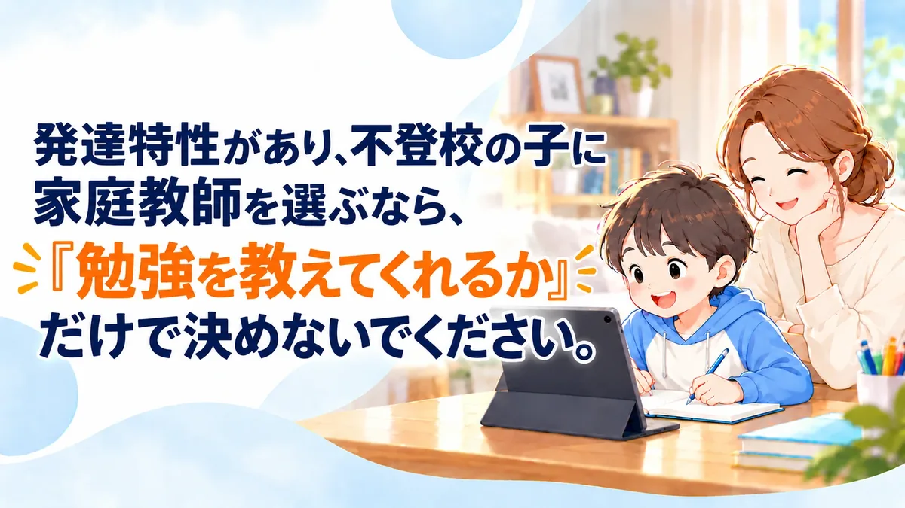
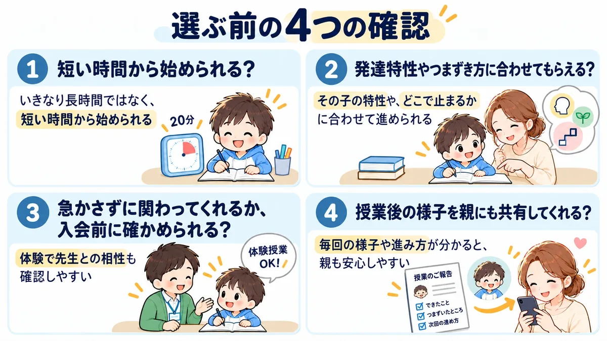
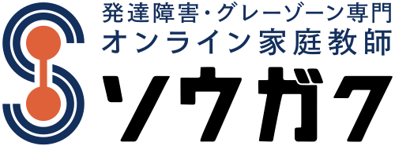
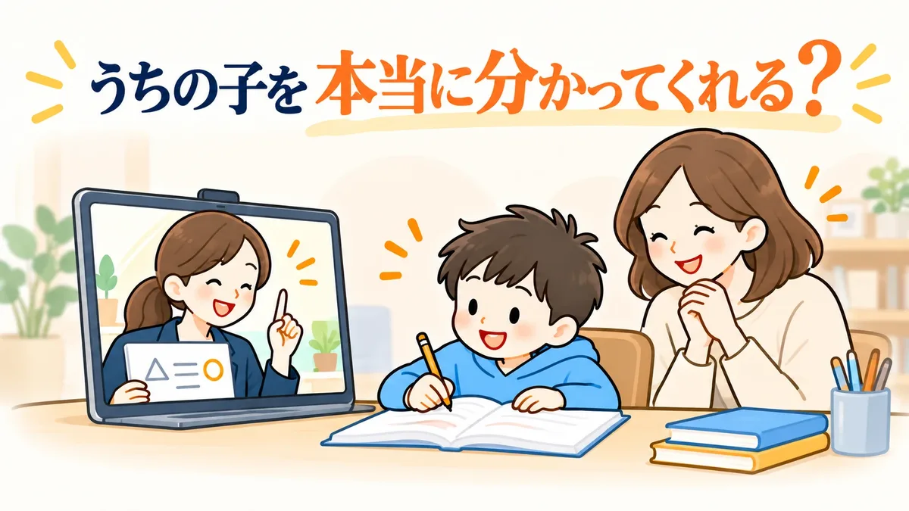
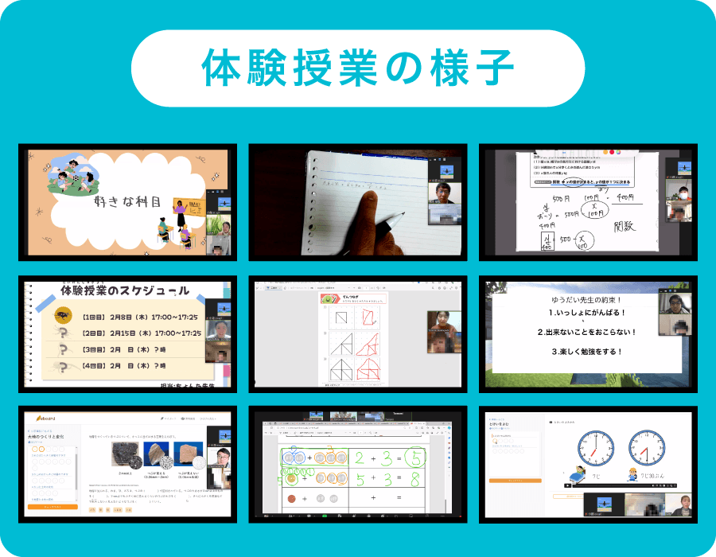

発達特性があり、不登校の子に家庭教師を選ぶなら、『勉強を教えてくれるか』だけで決めないでください。

でも家で勉強の話をすると嫌がることも多くて…。
発達特性もあるので、普通の家庭教師で合うのか不安です。
オンラインも考えているんですが…。
発達特性のある不登校の子の場合、勉強の遅れだけを見て急いで進めると、かえって負担になることもあります。
始めやすさ、特性への合わせ方、先生との相性、親への共有。
「勉強を教えてくれるか」のほかに、見てほしい4つ

※出席扱い・学校との連携などの対応範囲は、サービスや学校によって異なります。希望する場合は、申込前に学校と各サービスへ確認してください。
【結論】
家に人を迎えることが負担になりそうなら、オンラインも選択肢です。
オンライン家庭教師でも、授業時間や先生の体制、保護者への共有はサービスごとに違います。
条件だけで決めず、入会前に先生との相性まで確かめられるかも見ておきましょう。
次は、発達特性への対応や授業時間、先生との相性まで含めて、オンライン家庭教師3社を比べます。
オンライン家庭教師3社を比較
| 1位  ソウガク | 2位ティントル | 3位コーチング1 | |
|---|---|---|---|
| 総合評価 | 4.7★★★★★★★★★★ | 3.6★★★★★★★★★★ | 3.1★★★★★★★★★★ |
| 発達特性への対応 | ◎専門（専門機関監修） | ◯不登校専門・特性も対応 | ◎専門・発達検査あり |
| 先生の体制 | ◎研修を受けた社会人講師 | △現役の大学生 | ◯独自研修・選抜 |
| 授業時間 | ◎25分から | ◎30分単位 | △90分から |
| 料金（月の目安） | ◯13,200円〜 | ◎10,560円〜 | △30,690円〜 |
| 保護者サポート | ◎毎回の報告＋チャット | ◯相談士が面談・LINE | ◯毎回の報告書 |
| 入会前に確認できること | ◎無料体験2回保護者面談＋実際の授業入会後は返金保証あり※ | ◯無料相談＋体験 | ◯無料体験・カウンセリング |
| 申込・公式 | 公式サイト | 公式サイト | 公式サイト |
※評価について：発達特性への対応、先生の体制、授業時間、料金、保護者サポート、無料体験の6項目を、各社公式サイトで確認できる情報をもとに当サイト独自基準で評価しています。
※返金保証は条件を満たした場合のみです（条件はページ後半で説明しています）。
【結論】
料金だけで見ると、ソウガクが最安ではありません。
それでも1位にしたのは、発達特性を学んだ先生、短時間から選べる授業、そして入会前に担当予定の先生と実際に試せること。この3つがそろっているからです。
「うちの子に合いそうか、まず試してから決めたい」というご家庭なら、ソウガクは候補に入れやすいサービスです。
発達特性に強いオンライン家庭教師TOP3
ここまで見てきた比較項目をもとに、各社の公式情報を比べて順位をつけました。
※各社公式情報をもとに、当サイトが独自に評価しています。
🥇第1位 ソウガク発達障害・グレーゾーン専門のオンライン家庭教師
おすすめポイント
- 発達障害・グレーゾーン専門
- 専門機関の研修を受けた認定講師
- 授業は25分から選べる
- 毎回の指導報告＋教師/本部チャット
- 無料体験2回（1回目は保護者面談も可）
- 無料体験
- 2回
- 1回目は保護者面談も可
- 料金（月4回）
- 13,200円〜
- 小学生25分・税込
- 入会後継続率
- 96.7%
- 公式LP掲載
- 認定講師
- 100%
- 専門研修受講済み（公式LP掲載）
今回の決め手
入会前に、担当予定の先生と実際に話して「うちの子に合いそうか」を確かめられること。
発達特性のある子は、条件だけでは先生との相性まで分かりません。
ソウガクは無料体験が2回あり、1回目を保護者面談にすることもできます。
料金や授業時間を比べたうえで、最後は実際の先生と試してから決められる。ここを一番高く評価しました。
ソウガクを評価した主なポイント
| ◎ | 発達特性を学んだ先生発達凸凹アソシエーションの研修を受けた社会人講師 |
| ◎ | 短時間から始められる小学生は25分か50分、中高生は35分か60分 |
| ◎ | 入会前に先生との相性を確認できる無料体験2回。入会後に担当する予定の先生が体験を担当 |
ソウガクの料金（月4回・税込）
表は横にスクロール可能
| 学年 | 短いコース（月4回） | 長いコース（月4回） |
|---|---|---|
| 小学生 | 25分 13,200円 | 50分 22,000円 |
| 中学生 | 35分 18,480円 | 60分 26,400円 |
| 高校生 | 35分 21,560円 | 60分 29,920円 |
※すべて税込。入会金22,000円（税込）は別途。
- 保証金・月会費・更新費・教師交代費は0円
- 受験生割増なし・学年ごとの料金UPなし
- 科目数による料金UPなし
- 教材の購入は基本的に不要
- 途中でやめても解約金なし（月単位で休会・退会できる）
- きょうだいは2人目以降の入会金が免除、ひとり親家庭は入会金が半額
向いている家庭
- 塾が合わなかった
- つまずきから見てほしい
- 先生との相性を重視したい
体験で確認したいこと
- オンラインとの相性
- 学年に合った授業時間
- 先生との相性
🥈第2位 ティントル不登校専門のオンライン個別指導
おすすめポイント
- 不登校専門のオンライン個別指導
- 発達障害の特性がある子もサポート
- 30分単位で、受けた分だけの後払い
- 不登校心理相談士が家庭ごとに担当
- 自宅学習の出席扱いの申請に対応（小・中学生）
| 料金 | 小学生は1コマ30分 1,320〜2,970円（税込）。週1回60分なら月10,560円〜（4週換算）。中学生は1コマ1,870円〜 |
|---|---|
| 授業時間 | 1コマ30分。曜日・時間・回数は自由に決められる |
| 対象 | 小学生〜高校生（全国） |
| 先生 | 全員が現役の大学生（講師研修と不登校の生徒への対応研修あり） |
| 親の相談 | 不登校心理相談士の資格を持つスタッフが、オンライン面談・LINE・電話で相談にのる |
| お試し | 保護者の無料相談。希望すればお子さんの無料体験も |
| 受講環境 | パソコン・タブレット（Windows PC推奨） |
| キャンセル | 授業開始1時間前までの連絡ならキャンセル料なし |
ティントルは、学校に行きづらい子のためのオンライン個別指導です。
授業を固定しないので、慣れるまでは少なめに、しんどい日は休む、といった使い方ができます。
講師とは別に、不登校心理相談士の資格を持つスタッフが家庭ごとにつき、勉強以外の悩みも相談できます。
向いている人
- 不登校で出席扱いも考えたい
- 授業の回数を固定したくない
- 歳の近い先生がいい
選ぶ前に確認したいこと
- 入会金など料金の総額
- 発達特性への対応の中身
- 授業の報告の受け取り方
ソウガクとの違いとは？
ティントルは不登校の子への対応が中心で、先生は現役の大学生です。ソウガクは、発達障害・グレーゾーン向けの研修を受けた社会人講師が担当し、授業のたびに指導報告が届きます。
🥉第3位 家庭教師のコーチング1発達障害・グレーゾーン専門（オンライン対応）
おすすめポイント
- 発達障害・グレーゾーン専門の家庭教師
- 提携する臨床心理士の発達検査を受けられる
- 発達特性のある子の中学・高校受験に対応
- オンラインなら全国・海外から受けられる
- 教師の交代は何度でも無料
| 料金 | 入会金18,700円。週1回90分〜で月30,690円〜（税込）。別途、年会費あり |
|---|---|
| 授業時間 | 1回90分〜。回数と時間は目的に合わせて相談 |
| 対象 | 小学1年生〜高校3年生 |
| 先生 | 学習カウンセリングをもとに担当を選び、独自の研修をしてから紹介 |
| 親の相談 | 毎回の指導報告書。授業以外も教務に相談できる |
| お試し | 無料の体験学習・学習カウンセリング（約120分、オンラインも可） |
| 受講環境 | カメラとマイクが付いたパソコン・スマホ・タブレット |
| 教材 | 教材費はかからない（市販の教材をすすめる方針） |
コーチング1は、発達障害・グレーゾーンの子の学習指導と、中学受験・高校受験を得意とする家庭教師です。
訪問指導は首都圏・愛知・関西に限られますが、オンラインなら全国と海外から受けられます。
提携する臨床心理士の発達検査を受けられるのも、ほかにはない特徴です。
向いている人
- 受験も考えている
- 発達検査も相談したい
- 1回の授業をしっかり取りたい
選ぶ前に確認したいこと
- 年会費を含めた総額
- 90分の授業に集中できるか
- オンライン授業の進め方
ソウガクとの違いとは？
コーチング1は受験対策に強く、授業は1回90分からです。ソウガクは25分から選べるので、まずは短い時間で慣れたい子に向いています。
ソウガク、うちの子にも合う？
比較表を見ても、最後に残るのは「でも、うちの子に合うの？」という不安だと思います。
先生は本当に分かってくれる？ オンラインで集中できる？ また親が付きっきりにならない？
決める前に、この5つを確認しておきましょう。
①うちの子を本当に分かってくれる？

先生は、発達支援の専門機関の研修と、座学のマニュアル研修を受けた社会人講師です。
放課後等デイサービスでの勤務経験がある先生や、臨床心理士・作業療法士などの資格を持つ先生も在籍しています。
担任制なので、毎回先生が代わることはありません。
体験のあとには、担当の先生と教務で作ったその子だけの指導計画を渡してくれます。入会後も授業の様子をアセスメントシートに記録し、状況と対策を定期的に伝えてくれます。
②オンラインで集中できる？

授業は、小学生なら25分か50分、中高生なら35分か60分から選べます。
会話やゲームも取り入れながら、できる課題から少しずつ進めてくれます。
体験談｜画面の前に座れなかったケース
公式サイト掲載の保護者の声（中学2年生・特別支援学級）
勉強への苦手意識があり、初回の体験では落ち着いて画面の前に座ることも難しかったそうです。先生は急いで授業を進めず、時間をかけて関係をつくりました。
その後は授業の時間を楽しみにするようになり、勉強への苦手意識にも変化を感じているとのことです。
※ソウガク公式サイト掲載の体験談を当サイトが要約したものです。個人の感想であり、同様の結果を保証するものではありません。
③また親が付きっきりにならない？

授業が終わるたびに、先生が専用アプリで指導報告を送ってくれます。
「今日は何をやったの？」と聞き出さなくても理解度や様子が分かり、気になることはチャットで先生や本部に相談できます。
初回の授業以外は、親が家にいなくても受けられます。
体験談｜家で教えるとケンカになっていたケース
公式サイト掲載の保護者の声（小学4年生・ADHDの診断あり・普通級）
学校へ行ける日が減り、勉強の遅れが気になっていました。家で保護者が勉強を見ると、イライラして親子で言い合いになることもあったそうです。
オンラインで週1回学ぶ習慣ができたことで、保護者が「ずっと自分が見なければ」と抱えていた負担が軽くなったといいます。
※ソウガク公式サイト掲載の体験談を当サイトが要約したものです。個人の感想であり、同様の結果を保証するものではありません。
親がずっと教え続ける必要はありません。
家庭の外に、お子さんの困り方を一緒に見てくれる人を増やす。それも一つの方法です。
④本人が嫌がったら？
まずは今の様子を、無料体験で話してみてください。
※よくある迷いを編集部が会話形式にしたものです（人物はイメージ）。
⑤先生が合わなかったら？

先生との相性は、プロフィールだけでは分かりません。
ソウガクの無料体験は2回あり、体験を担当するのは入会後に担当する予定の先生です。
実際に話してみて、「この先生なら話せそうか」まで見てから決められます。
- 申込公式サイトから無料体験を申し込む
- 1回目保護者と先生の面談にもできる（お子さんなしでもOK）
- 2回目お子さんが実際の授業を受ける（25分か50分。中高生は35分か60分）
- 体験後その子だけの指導計画を受け取る
- 決める合いそうなら入会。合わなければ入会しなくてOK
入会後に合わないと感じたときも、教師の交代は何度でも無料です。
このページだけで、合う・合わないを決める必要はありません。
入会するかどうかは、2回の無料体験で実際の先生と話してから決められます。
※入会後も、初回授業日から30日以内の連絡など条件を満たせば、授業料1カ月分の返金保証があります（入会金は対象外）。詳しい条件はFAQをご確認ください。
ソウガクのよくある質問

診断がついていなくても受けられますか？
はい。診断がなくても、グレーゾーンでも受講できます。診断名の申告や手帳・受給者証の提出も不要です。
集中力が続かなくても大丈夫？
集中が続きにくいお子さん向けに、小学生には25分、中高生には35分の短時間コースがあります。会話やゲームを取り入れるなど、飽きずに続けやすい工夫もあります。
先生が合わなかったら？
教師の交代は何度でも無料です。担当教師の性別希望も伝えられます。
パソコンやタブレットは必要ですか？
インターネットにつながるパソコン・タブレット・スマートフォンのいずれかがあれば受講できます。授業は無料アプリのZoomを使います。カメラとマイクは、スマートフォンのものでも大丈夫です。
住んでいる地域は関係ありますか？
オンライン授業なので全国から受講できます。対象は小学生・中学生・高校生です。
授業中、親はずっとそばにいる必要がありますか？
初回はできる限り同席をお願いしていますが、その後は保護者が家にいなくても受講できます。指導内容は専用アプリで確認できます。
体験後にしつこく勧誘されませんか？
公式FAQでは、体験後に無理な勧誘はしないと明記されています。
1カ月全額返金保証は、本当に全額戻りますか？
対象は1カ月分の受講料で、入会金は対象外です。初めて利用する家庭（1世帯1回）が対象で、初回授業日から30日以内の連絡、最低1回の授業受講などの条件があります。対象コース・回数にも条件があるため、申込前に公式サイトで最新条件を確認してください。
迷ったら、まず体験で確かめる

お子さんのことだから、条件だけ見て簡単には決められません。
「本当に合うのかな」
「また続かなかったらどうしよう」
「先生とは話しやすそうかな」
比較しても、最後まで分からない部分は残ります。
だからこそ、まず担当予定の先生と実際に話して、授業を受けてみる。
「ちょっと違うな」と思えば、入会しなくて大丈夫です。
「この先生なら話せそう」「このやり方なら続けられそう」と思えたら、そのときに考えれば十分です。
勉強のことを、親子だけで抱え込まない方法もあります。
お子さんに合う学び方かどうかを確かめるために、無料体験を使ってみてください。
- 無料体験2回（1回目は保護者面談も可）
- 入会後に担当する予定の先生が体験を担当
- 体験後に、その子だけの指導計画
- 入会後は返金保証あり※
※掲載情報は2026年10月6日時点の各社公式情報をもとに作成しています。最新の料金・サービス内容・適用条件は各公式サイトでご確認ください。
このページの運営者
- サイト名
- わが子の学び方ガイド
- 運営者
- わが子の学び方ガイド編集部（運営：ハコぶファミリー）
- お問い合わせ
- ハコぶファミリー お問い合わせ
当ページは、紹介しているサービスの運営会社が作成したものではありません。サービスの申込・利用に関するお問い合わせは、各サービスの公式サイトへお願いします。